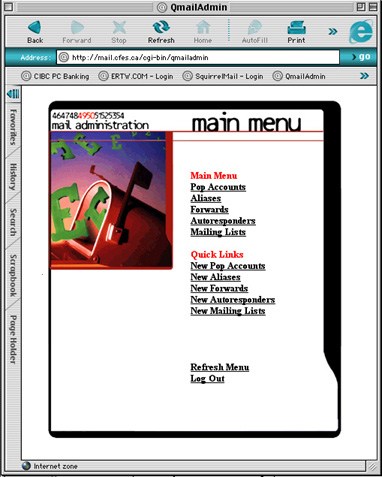

| >Main Admin Page >Email Administration Guide Index |

The Main Menu presents you with the following options:
This menu allows you to add, remove, edit, and delete accounts for your domain. These are full accounts with the emai being accessed using any of POP3/IMAP/Webmail. You can also define a "catch all" account to receive the email for accounts that do not exist. More on that later
Mail sent to the aliases you create can be forwarded to an EXISTING mail account ON YOUR DOMAIN.
Allows you to forward mail sent to an existing or nonexistent mail account on your domain to any email account anywhere on the web. For example. Mail sent to blah@yourdomain.com can be forwarded to my_hotmail_account@hotmail.com or my_yahoo_account@yahoo.com. Forwards can also be used like aliases to deliver mail to other local accounts in the same domain. It is however recommended that aliases be used for this as they are more efficient.
You can set up different messages for different accounts on your domain. These messages will automatically be sent automatically to people who send you mail. For example: if you are out of town, set up a message that says "I'm on vacation and won't be back till next week". The current version of QmailAdmin does not yet allow normal users to use this feature yet. It is expected in the next version of QmailAdmin.
You can create your own mail lists. You can send an email to dozens of your friends at once, or family, or employees of your company, etc.
| >Main Admin Page >Email Administration Guide Index |